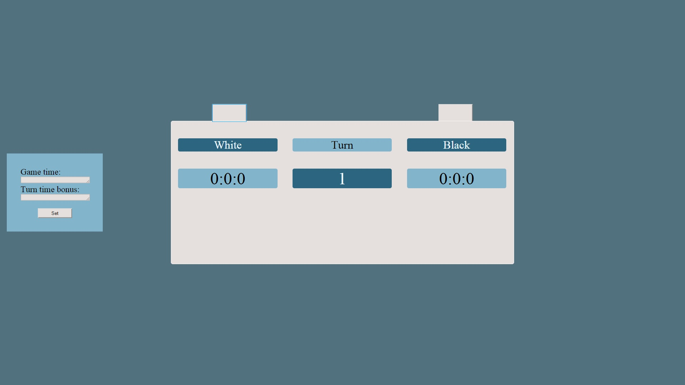

Some of my work includes a project for Data Visualization class. The idea behind the project was to visualize branches of science by using D3.js library.
For this purpose I used Radial Reingold-Tilford Tree, which seemed like the best way of displaying science branches.
You can explore the project by clicking on the image.
As a requirement for Chess & Computers class laboratory exercise, I had to create a chess clock using any technology available. Given my interests in front end development, I decided to complete the exercise using HTML, CSS and JS result of which can be tested by clicking on the image below.
As for the other projects, one I'm currently working on is a fansite for a video game. Other projects include websites which I use to further increase my knowledge of Web technologies.